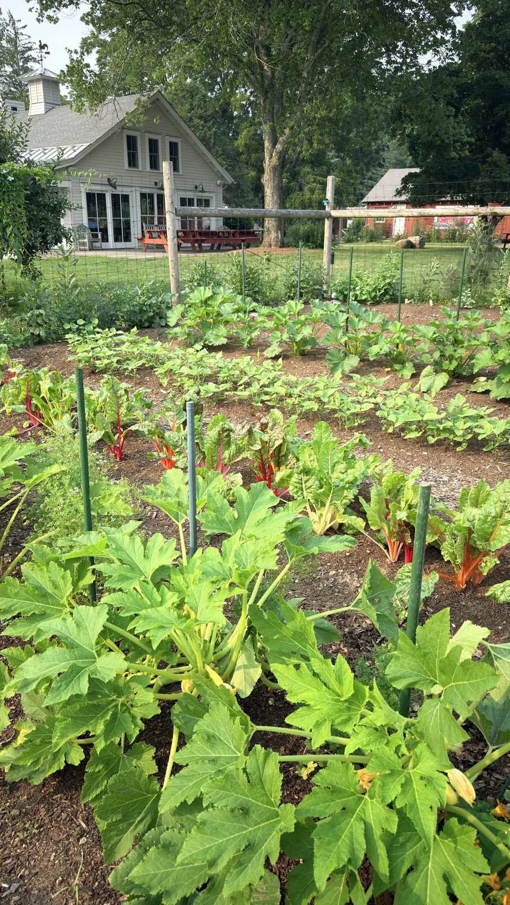

Wakeman Town Farm
Market garden manager
Wakeman Town Farm is a nonprofit educational homestead in Westport. As market garden manager, I oversee vegetable and cut flower production, supply the farmstand, and work with the volunteers and interns who come to learn.